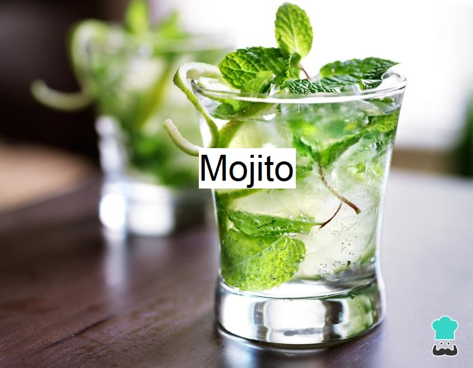

Mojito
El mojito es es un cóctel popular originario de Cuba, compuesto de ron, limón, azúcar (tradicionalmente jugo de caña de azúcar), menta o eucalipto y agua mineral. La combinación de sabor dulce, cítrico, y menta complementa el sabor del ron, y hace del mojito una bebida popular de verano.

Ingredientes
- Agua con gas 25 cc
- Jugo de lima 25 cc
- Ron blanco 50 cc
- Menta fresca Hojas
- Azúcar 1 cda.
- Limas
- Hielo Cantidad necesaria
Primero tomar una lima, cortarla al medio y extraer su jugo. - En un vaso de trago largo coloque 25ml de jugo de lima, 25 ml de agua con gas, y una cucharada de azúcar.
Ahora debe revolver hasta diluir el azúcar y el limón y unificar los sabores.
Luego, agregue dos ramitas de hierba buena o menta.
Con una cuchara larga presione suavemente el tallo de la menta.
La clave está en no machacar ni quebrar la menta.
En realidad, el objetivo es refrescar las paredes internas del vaso logrando que la menta desprenda todos sus aromas mientras bebe algunos sorbos.
Agregar hielo y 50ml de ron blanco.
Revolver y agregar un golpe de agua con gas.
Con la cuchara extraiga las hojas de hierba buena a la superficie del vaso.